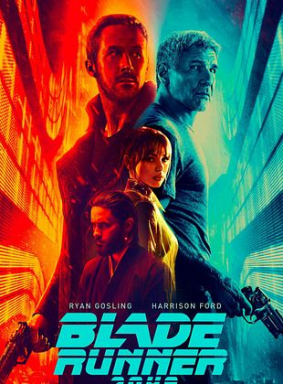

Em Blade Runner 2049, K descobre que replicantes podem se reproduzir e recebe a missão de encontrar e eliminar a criança, cujo nascimento ameaça a relação entre humanos e replicantes.
Filmes mostrados: 0
Total de favoritos: 0
| Filme | Ano | Nota | Status |
|---|---|---|---|
| Tudo em Todo o Lugar ao Mesmo Tempo | 2022 | 4.9 | Vencedor do Oscar |
| Barbie | 2023 | 5 | Indicado ao Oscar |
| Parasita | 2019 | 5 | Vencedor do Oscar |
| Ainda Estou Aqui | 2024 | 5 | Vencedor do Oscar |
| Dear Friends (2007) | 2007 | 4.8 | Sem prêmios relevantes |
| Kamikaze Girls | 2004 | 5 | Yokohama Film Festival Melhor Filme |
| Backrooms: Um Não-Lugar | 2026 | 4.9 | Concorrendo a premiações |
| Obsession | 2026 | 5 | Concorrendo a premiações |
Este catálogo foi criado por Maria Eduarda, estudante de Engenharia de Software, como atividade de CSS e JavaScript. Aqui ficam reunidos filmes que marcaram época, com destaques, notas e premiações. Siga nas redes sociais para receber mais indicações de filmes todas as semanas.